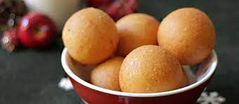
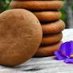
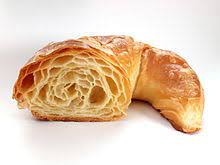
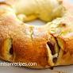
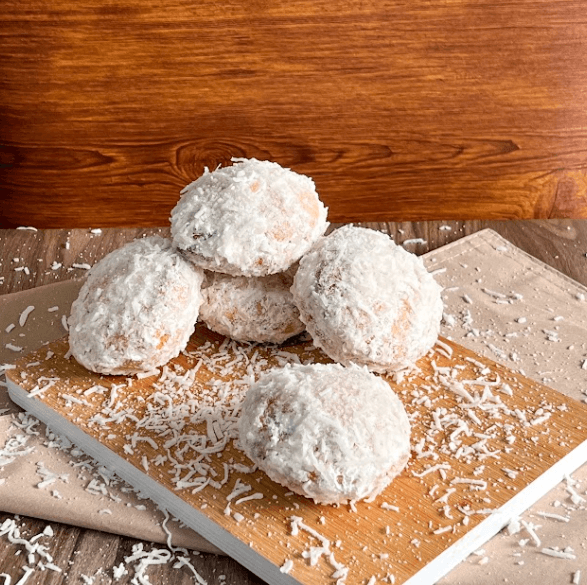
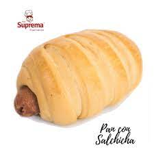
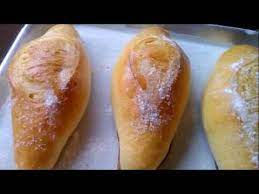

| BUÑUELO
son una fritura que tiene una gran tradición cultural y culinaria en México

precio: 1.000 |
CUCAS
Las cucas o galletas negras, también conocidas como galletas del país, liberales o peras, son galletas de sabor dulce

precio: 1.000 |
PAN DE YUCA
El pandeyuca o pan de yuca es una pieza de panadería en forma de panecillo, elaborado con queso blanco molido, almidón de yuca cernido, huevo
 precio: 1.000
precio: 1.000 |
| CROASA
es una pieza de panadería de origen francés.

precio: 1.000 |
PAN DE LECHE
s un tipo de pan semidulce de origen francés, ligero pero sabroso, hecho a base de una pasta con huevos, levadura fresca, leche
 precio:500
precio:500 |
ROSCON
de Bocadillo es la pasta de guayaba (bocadillo), un ingrediente ampliamente utilizado en la cocina

precio: 1.000 |
| PERA
pan con trozos de coco y con mantequilla

precio:1.000 |
PAN SALCHICHA

precio:1.000
| PAN SALADO
un pan redondo comido principalmente para el almuerzo

precio: 500 |